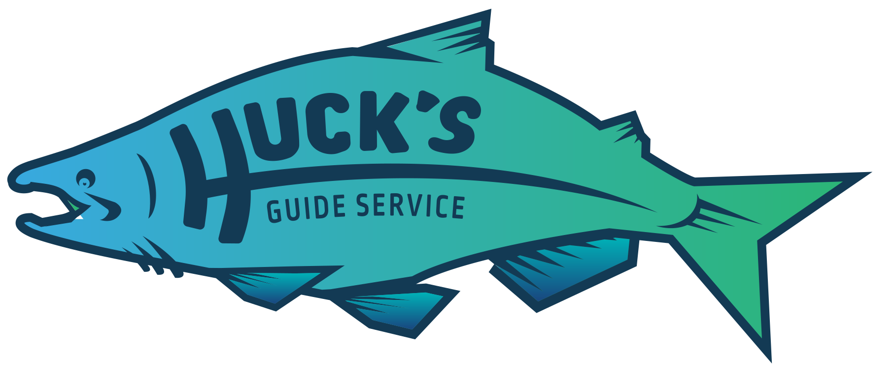

IN RUN / OUT OF RUN
Summer Chinook
Fall Chinook
Winter Steelhead
Spring Chinook
Bottom Fish
IN RUN / OUT OF RUN
Summer Chinook
Fall Chinook
Winter Steelhead
Spring Chinook
Bottom Fish
My name is Bryan Huck and I have dreamed of being a fishing guide since I was 16. I grew up in Springfield, OR fishing the McKenzie river. I moved to Tillamook in 2010 and quickly started learning to fish the many rivers of the area. I have a passion for fishing, and it is no exaggeration in saying I'm obsessed, just ask my wife! My goal is to share this passion for fishing with others through a fun and exciting fishing experience.
At Huck’s Guide Service, my wife and I know this is YOUR trip. We cater to our clients, so if you have a special request, please let us know when you book your trip. From trips with families to corporate business clients, we strive to be your premier guide service. We fish with the best gear in one of the most amazing areas in the world to catch fish!
I am CPR, First Aid and Coast Guard licensed with an offshore endorsement.
Recent runs of Coho salmon have provided an awesome opportunity to catch these acrobatic fish in the ocean, typically during July and August. Given that the coho run typically has strict timing and quota limits, trip availability will vary. Coho and summer chinook salmon are some of the freshest runs of salmon since they are coming straight out of the Pacific ocean. Our 24’ Willie Nemesis will be utilized for this trip. Bottom fishing can be included as a part of these trips depending on what you and the rest of the crew want do. These trips will also include the opportunity to catch some of the prized Dungeness crab.
Fishing for fall chinook salmon is one of the most popular trips we offer. From mid August through the end of November, we will be chasing fall chinook as they make their way from the Pacific ocean up to their spawning grounds in one of the many rivers in the Tillamook area. Early in the season, before the fall rains, we will fishing from our 24’ Willie Nemesis in the ocean or local bays (Tillamook, Nehalem, Nestucca) depending on conditions. During this time, trips will also include the opportunity for you to pull crab pots (set the day before) depending on ocean conditions. Later in the season, we will be fishing one of the many local rivers (Trask, Wilson, Nestucca, Nehalem, Kilchis) from our 17’ Willie drift boat. Given the ever changing conditions and the abundance of rivers to choose from in the area, we have the flexibility to switch rivers throughout the day in order to maximize the chances of catching fish. Due to the weather in October and November, I will try to check in with you about a week before your trip to let you know about the conditions to expect. If mother nature takes a turn for the worse and the rivers “blow” out, we will need to be flexible and pick a new date for you.
Winter steelhead trips will be offered from January through the beginning of April. These trips are typically very action packed. Given the methods used to pursue these fish, be ready to hone your casting skills! Our Willie drift boat (heated for those cold mornings) will be used to maneuver down one of the many local rivers (Trask, Wilson, Nestucca, Nehalem, Kilchis). Depending on your interests and fishing conditions, these trips can target hatchery fish to fill your freezer or the iconic wild steelhead (which is a catch and release species). Certain rivers are better for targeting hatcher vs wild fish, so let me know what you are interested in when you book your trip. Due to the weather this time of the year, I will try to check in with you about a week before your trip to let you know about the conditions to expect. If mother nature takes a turn for the worse and “blows” the rivers out, we will need to be flexible and pick a new date for you.
Spring Chinook salmon are the filet mignon of the sea. This trip will be offered during the months of May and June and will utilize our 24’ Willie Nemesis. The ocean and local bays (typically the Nestucca and Tillamook) will be our best chance to chase down these tasty fish. Pound for pound, these are the hardest fighting fish of the year. If ocean conditions permit, this trip could include the opportunity to catch Dungeness Crab.
Bottom fishing trips in the ocean are typically very action packed and are great for all age groups. We will be targeting a variety of fish species, including sea bass, ling cod and halibut. Crabbing is included during bottom fishing trips, depending on interest. Our 24’ Nemesis provides a very stable and safe platform to enjoy a day out on the open ocean. These trips can be booked throughout the summer months and will be scheduled around ocean conditions.
17’x60" Willie Drift Boat
We currently have a propane heated 17ft Willie drift boat which will be used for winter steelhead and fall chinook when they enter the river systems in the fall & winter. This boat seats two people and provides the ultimate river fishing experience. If you haven’t ever chased salmon or steelhead from a drift boat, you are in for quite the treat!
24' Willie Nemesis
Fall of 2017 we will have a brand new Willie Nemesis which will be used for spring, summer and fall Chinook as well as bottom fishing and crabbing. This boat holds up to four people, in addition to the captain, and provides heated seats for your comfort. The motto of Willie Boats is “Simply the Best” and that can clearly be seen in the craftsmanship beauty of their boats.
This custom built boat has been designed to provide comfort and the ultimate fishing experience. We find pride in providing quality, clean equipment. We want to make certain that you feel well taken care of throughout your fishing experience with us.
$
A $50 deposit is due at the time of booking. The remainder can be paid on the day of the trip. If I need to cancel the trip due to weather or river conditions and we cannot reschedule due to your/my conflicts, your deposit will be refunded in full.
$200/person, for now we only accept cash and checks I will be trying to fill the boat each day, so if you come with 2 on a drift boat trip or 4 on a power boat trip, you will have the boat to yourself. Otherwise, you may be fishing with other enthusiasts like yourself!